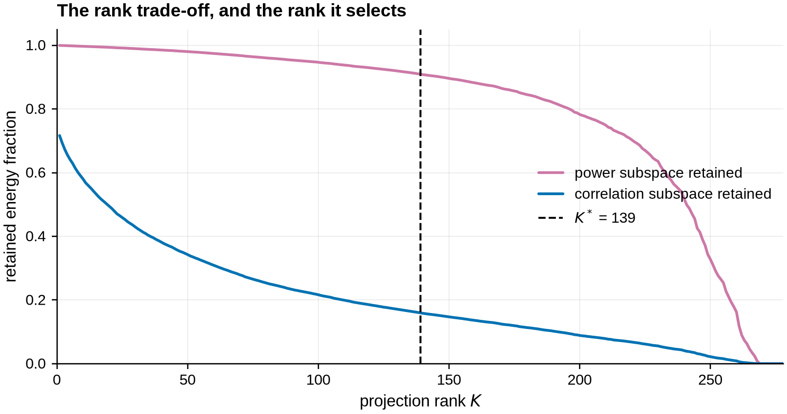
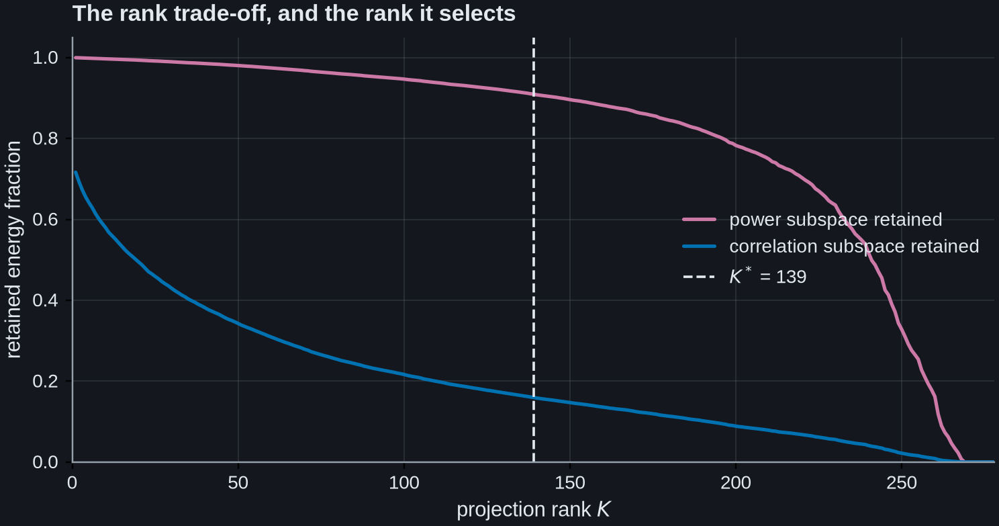
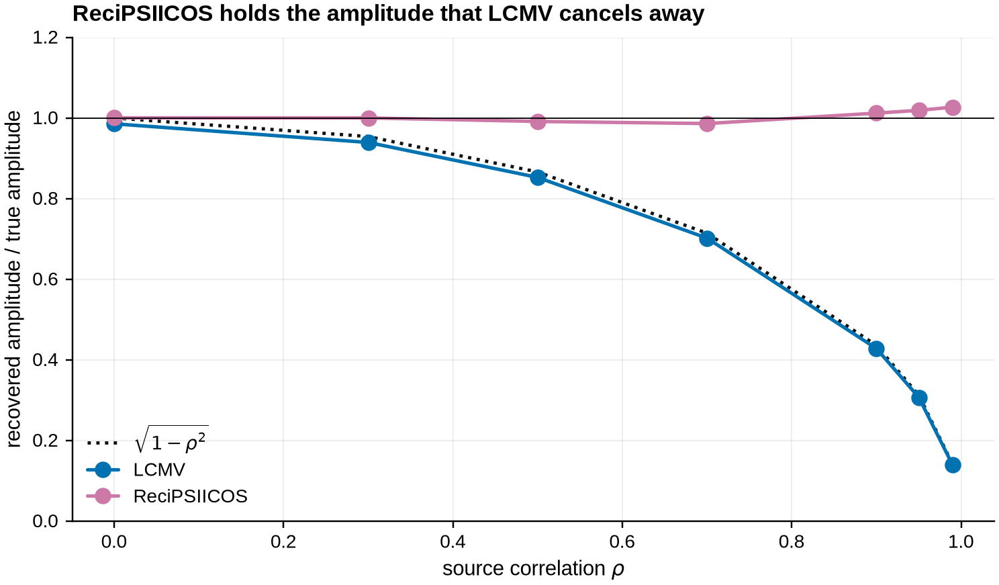
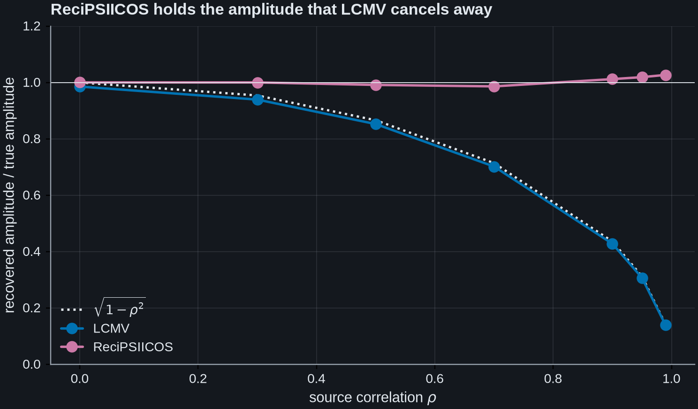
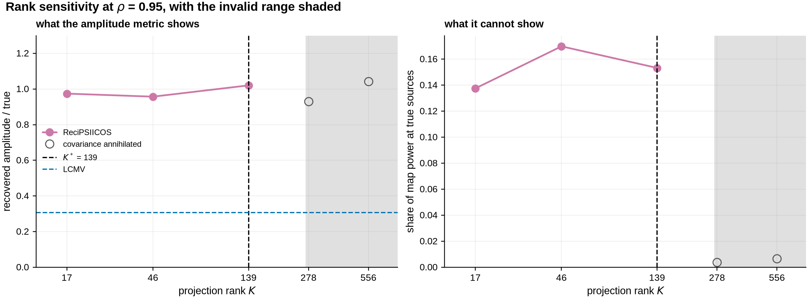
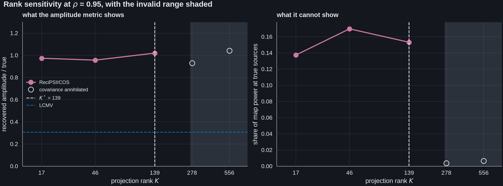
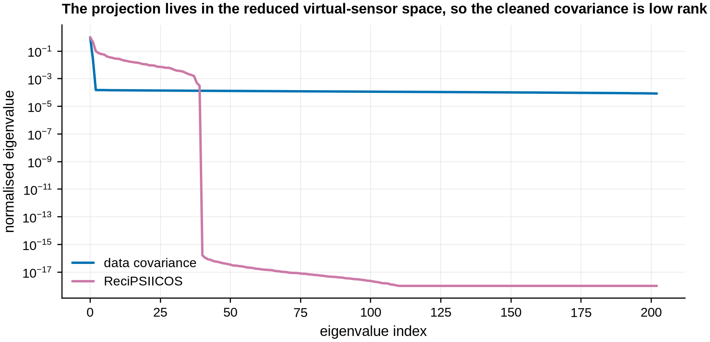
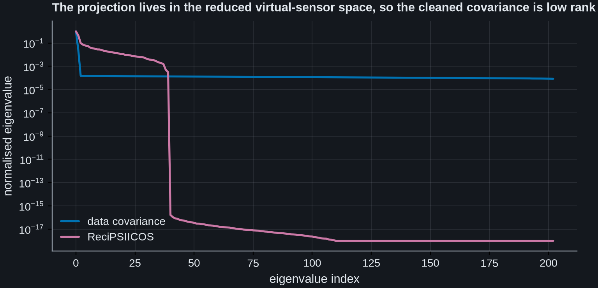

Note
Go to the end to download the full example code.
ReciPSIICOS versus LCMV as source correlation is dialled up#
An LCMV beamformer minimises output power under a unit-gain constraint. When two sources are correlated that is a trap: the filter can lower its own output power by passing a scaled copy of the other source, which cancels the target it was supposed to pass. The recovered amplitude collapses as the correlation rises.
ReciPSIICOS [1] attacks this before the beamformer is built. From the forward model alone it constructs a projector that suppresses the cross-product (coupling) part of the sensor covariance while sparing the auto-product (power) part, and applies it to the data covariance. The result approximates the covariance that would have been measured had the same sources been uncorrelated. An ordinary LCMV built on it therefore has nothing to cancel.
This example dials the correlation from 0 to 0.99 and measures what each method recovers, then shows how to choose the method’s single free parameter, the projection rank.
The head model matters here and is worth stating up front. The sources are
simulated, but they are simulated on the real BEM forward of the MNE
sample dataset rather than on a sphere. ReciPSIICOS builds its projector
from the forward, so the forward decides how well the power and correlation
subspaces separate. On a single-shell sphere method='recipsiicos' barely
separates them at all – measured on a 60-channel EEG sphere it keeps 0.99 of
the power subspace and 0.87 of the correlation subspace at \(K^*\) – which
leaves the automatic rank criterion nothing to lock onto. ('whitened'
separates cleanly even there, 0.83 against 0.16, so this is a property of the
projector rather than of spheres as such.) A realistic forward is the regime
the method was developed and validated in, and is what is used here.
See MCMV versus LCMV for correlated sources: a simulation for the same cancellation attacked from the other direction, by constraining the sources jointly, and ReciPSIICOS beamforming of bilateral auditory responses for this method run end to end on real recorded data.
References#
# Authors: Sepehr Shirani <sepehrshirani@gmail.com>, <s.shirani@ucl.ac.uk>
# Muzhi Wang <muzhi.wang@ucl.ac.uk>
# Jade Serfaty <jade.serfaty.17@ucl.ac.uk>
# License: BSD-3-Clause
import matplotlib.pyplot as plt
import mne
import numpy as np
from mne import Label
from mne.beamformer import apply_lcmv, apply_lcmv_cov, make_lcmv
from mne.forward import restrict_forward_to_label
from advance_beamlab import (
make_recipsiicos_cov,
make_recipsiicos_lcmv,
recipsiicos_rank_curve,
)
mne.set_log_level("ERROR")
The real gradiometer forward of the sample dataset, decimated to a coarse
whole-brain grid. The grid stays whole-brain on purpose: the projector must
span where the covariance’s energy actually lives, so restricting it to a
region would be wrong. Decimation only keeps the correlation Gram, which is
quadratic in the number of sources, tractable.
data_path = mne.datasets.sample.data_path()
meg = data_path / "MEG" / "sample"
info = mne.io.read_info(meg / "sample_audvis_filt-0-40_raw.fif")
info = mne.pick_info(info, mne.pick_types(info, meg="grad", eeg=False, exclude="bads"))
fwd = mne.read_forward_solution(meg / "sample_audvis-meg-eeg-oct-6-fwd.fif")
fwd = mne.pick_types_forward(fwd, meg="grad", eeg=False)
fwd = restrict_forward_to_label(
fwd,
[
Label(fwd["src"][h]["vertno"][::28], hemi=hemi, subject="sample")
for h, hemi in enumerate(("lh", "rh"))
],
)
fwd = mne.convert_forward_solution(fwd, force_fixed=True, use_cps=True)
common = [ch for ch in info["ch_names"] if ch in fwd["sol"]["row_names"]]
info = mne.pick_info(info, [info["ch_names"].index(ch) for ch in common])
gain = np.asarray(fwd["sol"]["data"])[
[fwd["sol"]["row_names"].index(ch) for ch in common]
]
source_rr = fwd["source_rr"]
print(f"{fwd['nsource']} sources, {gain.shape[0]} gradiometers")
269 sources, 203 gradiometers
One source per hemisphere, about 12 cm apart: the bilateral configuration where correlated-source cancellation is the classic failure.
source separation: 12.1 cm
Choosing the projection rank. The rank is the method’s only free parameter.
recipsiicos_rank_curve reports, for every rank, how much of the source-power
subspace and how much of the correlation subspace survive the projection. The
useful rank keeps the power while depleting the correlation; the 45-degree point
of that trade-off is what return_optimal=True returns.
ranks, p_pwr, p_cor, k_opt = recipsiicos_rank_curve(
fwd, info, method="whitened", return_optimal=True
)
print(
f"K* = {k_opt}: retains {p_pwr[k_opt - 1]:.1%} of the power subspace "
f"and {p_cor[k_opt - 1]:.1%} of the correlation subspace"
)
fig, ax = plt.subplots(figsize=(7, 3.8))
ax.plot(ranks, p_pwr, color="C3", label="power subspace retained")
ax.plot(ranks, p_cor, color="C0", label="correlation subspace retained")
ax.axvline(k_opt, color="k", ls="--", lw=1.2, label=f"$K^*$ = {k_opt}")
# Both curves saturate long before the largest rank the covariance space admits,
# so the axis stops where they stop changing. Drawn to the full range the entire
# trade-off -- and the selected rank with it -- was compressed into the left
# fifth of the panel, with the rest two flat lines carrying no information.
_reached = np.flatnonzero(p_pwr >= 0.99)
_saturated = int(ranks[_reached[0]]) if _reached.size else int(ranks[-1])
ax.set(
xlabel="projection rank $K$",
ylabel="retained energy fraction",
ylim=(0, 1.05),
xlim=(0, min(int(ranks[-1]), max(2 * k_opt, int(1.2 * _saturated)))),
)
ax.set_title("The rank trade-off, and the rank it selects", loc="left")
ax.legend(loc="center right")
fig.tight_layout()


K* = 139: retains 91.0% of the power subspace and 16.0% of the correlation subspace
Simulate the pair at a given correlation and measure what each beamformer recovers. Both read out with unit gain, so the recovered amplitude is directly comparable with the injected one. A noise-normalised readout would rescale the axis and hide exactly the effect being measured.
rng = np.random.default_rng(0)
n_epochs, n_times = 60, 160
times = np.arange(n_times) / info["sfreq"] - 0.2
active = times >= 0.0
REG = 0.01 # light regularisation: loading of its own masks the cancellation
def recovered(rho):
"""Return (LCMV, ReciPSIICOS) recovered RMS amplitude, as a fraction of truth."""
phi = np.arccos(rho)
s = np.zeros((2, n_times))
s[0, active] = np.cos(2 * np.pi * 10 * times[active])
s[1, active] = np.cos(2 * np.pi * 10 * times[active] + phi)
amp = 2e-11 / np.abs(gain[:, sources]).max()
signal = amp * (gain[:, sources] @ s)
data = np.stack(
[
signal + 0.02 * 2e-11 * rng.standard_normal(signal.shape)
for _ in range(n_epochs)
]
)
epochs = mne.EpochsArray(
data, info.copy(), tmin=times[0], baseline=None, verbose=False
)
data_cov = mne.compute_covariance(epochs, tmin=0.0, method="shrunk", verbose=False)
noise_cov = mne.compute_covariance(
epochs, tmin=None, tmax=0.0, method="shrunk", verbose=False
)
evoked = epochs.average()
truth = amp / np.sqrt(2) # RMS of a unit-amplitude cosine
lcmv = make_lcmv(
info,
fwd,
data_cov,
reg=REG,
noise_cov=noise_cov,
pick_ori=None,
weight_norm=None,
)
recip = make_recipsiicos_lcmv(
info,
fwd,
data_cov,
rank=k_opt,
method="whitened",
noise_cov=noise_cov,
weight_norm=None,
reg=REG,
)
out = []
for filters in (lcmv, recip):
tc = apply_lcmv(evoked, filters).data[sources][:, active]
out.append(float(np.mean(np.sqrt((tc**2).mean(axis=1)) / truth)))
return out[0], out[1], data_cov, noise_cov
rhos = np.array([0.0, 0.3, 0.5, 0.7, 0.9, 0.95, 0.99])
lcmv_amp, recip_amp = [], []
for rho in rhos:
a, b, data_cov, noise_cov = recovered(rho)
lcmv_amp.append(a)
recip_amp.append(b)
print(f"rho = {rho:4.2f}: LCMV {a:.3f} ReciPSIICOS {b:.3f} ({b / a:.2f}x)")
/home/runner/work/advance_beamlab/advance_beamlab/examples/plot_recipsiicos_simulation.py:177: RuntimeWarning: Epochs are not baseline corrected, covariance matrix may be inaccurate
data_cov = mne.compute_covariance(epochs, tmin=0.0, method="shrunk", verbose=False)
/home/runner/work/advance_beamlab/advance_beamlab/examples/plot_recipsiicos_simulation.py:178: RuntimeWarning: Epochs are not baseline corrected, covariance matrix may be inaccurate
noise_cov = mne.compute_covariance(
rho = 0.00: LCMV 0.985 ReciPSIICOS 1.000 (1.02x)
/home/runner/work/advance_beamlab/advance_beamlab/examples/plot_recipsiicos_simulation.py:177: RuntimeWarning: Epochs are not baseline corrected, covariance matrix may be inaccurate
data_cov = mne.compute_covariance(epochs, tmin=0.0, method="shrunk", verbose=False)
/home/runner/work/advance_beamlab/advance_beamlab/examples/plot_recipsiicos_simulation.py:178: RuntimeWarning: Epochs are not baseline corrected, covariance matrix may be inaccurate
noise_cov = mne.compute_covariance(
rho = 0.30: LCMV 0.939 ReciPSIICOS 1.000 (1.06x)
/home/runner/work/advance_beamlab/advance_beamlab/examples/plot_recipsiicos_simulation.py:177: RuntimeWarning: Epochs are not baseline corrected, covariance matrix may be inaccurate
data_cov = mne.compute_covariance(epochs, tmin=0.0, method="shrunk", verbose=False)
/home/runner/work/advance_beamlab/advance_beamlab/examples/plot_recipsiicos_simulation.py:178: RuntimeWarning: Epochs are not baseline corrected, covariance matrix may be inaccurate
noise_cov = mne.compute_covariance(
rho = 0.50: LCMV 0.852 ReciPSIICOS 0.991 (1.16x)
/home/runner/work/advance_beamlab/advance_beamlab/examples/plot_recipsiicos_simulation.py:177: RuntimeWarning: Epochs are not baseline corrected, covariance matrix may be inaccurate
data_cov = mne.compute_covariance(epochs, tmin=0.0, method="shrunk", verbose=False)
/home/runner/work/advance_beamlab/advance_beamlab/examples/plot_recipsiicos_simulation.py:178: RuntimeWarning: Epochs are not baseline corrected, covariance matrix may be inaccurate
noise_cov = mne.compute_covariance(
rho = 0.70: LCMV 0.702 ReciPSIICOS 0.986 (1.40x)
/home/runner/work/advance_beamlab/advance_beamlab/examples/plot_recipsiicos_simulation.py:177: RuntimeWarning: Epochs are not baseline corrected, covariance matrix may be inaccurate
data_cov = mne.compute_covariance(epochs, tmin=0.0, method="shrunk", verbose=False)
/home/runner/work/advance_beamlab/advance_beamlab/examples/plot_recipsiicos_simulation.py:178: RuntimeWarning: Epochs are not baseline corrected, covariance matrix may be inaccurate
noise_cov = mne.compute_covariance(
rho = 0.90: LCMV 0.428 ReciPSIICOS 1.012 (2.36x)
/home/runner/work/advance_beamlab/advance_beamlab/examples/plot_recipsiicos_simulation.py:177: RuntimeWarning: Epochs are not baseline corrected, covariance matrix may be inaccurate
data_cov = mne.compute_covariance(epochs, tmin=0.0, method="shrunk", verbose=False)
/home/runner/work/advance_beamlab/advance_beamlab/examples/plot_recipsiicos_simulation.py:178: RuntimeWarning: Epochs are not baseline corrected, covariance matrix may be inaccurate
noise_cov = mne.compute_covariance(
rho = 0.95: LCMV 0.307 ReciPSIICOS 1.019 (3.32x)
/home/runner/work/advance_beamlab/advance_beamlab/examples/plot_recipsiicos_simulation.py:177: RuntimeWarning: Epochs are not baseline corrected, covariance matrix may be inaccurate
data_cov = mne.compute_covariance(epochs, tmin=0.0, method="shrunk", verbose=False)
/home/runner/work/advance_beamlab/advance_beamlab/examples/plot_recipsiicos_simulation.py:178: RuntimeWarning: Epochs are not baseline corrected, covariance matrix may be inaccurate
noise_cov = mne.compute_covariance(
rho = 0.99: LCMV 0.139 ReciPSIICOS 1.027 (7.39x)
The headline result. LCMV loses most of the amplitude by \(\rho = 0.9\) and nearly all of it by \(\rho = 0.99\), tracking the analytic \(\sqrt{1-\rho^2}\) law. ReciPSIICOS stays flat at the injected amplitude across the whole range, because the covariance it is given no longer contains the cross-term the filter would have exploited.
fig, ax = plt.subplots(figsize=(7, 4.2))
ax.plot(
rhos,
np.sqrt(1 - rhos**2),
color="#111111",
ls=":",
lw=1.6,
label=r"$\sqrt{1-\rho^2}$",
)
ax.plot(rhos, lcmv_amp, "o-", color="C0", ms=7, label="LCMV")
ax.plot(rhos, recip_amp, "o-", color="C3", ms=7, label="ReciPSIICOS")
ax.axhline(1.0, color="k", lw=0.6)
ax.set(
xlabel=r"source correlation $\rho$",
ylabel="recovered amplitude / true amplitude",
ylim=(0, 1.2),
)
ax.set_title("ReciPSIICOS holds the amplitude that LCMV cancels away", loc="left")
ax.legend(loc="lower left")
fig.tight_layout()


How sensitive is this to the rank? Less than one might fear over the ranks that are valid, which is the useful practical finding. The top of the range needs more care than that sentence suggests, though, and the obvious metric is blind to the reason why.
The bound is hard. Once the rank reaches the rank of the power Gram, which is the number of independent source topographies the forward supports, the whitened projector removes the entire power subspace and the modified covariance is exactly zero; the implementation warns when a requested rank crosses it. What makes this worth a figure rather than a footnote is that the recovered-amplitude metric cannot detect it. A unit-gain filter satisfies \(w^T g = 1\) at the location it is pointed at whatever covariance it was built from, so past the bound it keeps reporting about one while the filter carries no information at all. The sweep below therefore reports a second quantity as well, the share of the whole power map falling on the two true sources, which has no such floor and does collapse.
The sweep is measured at \(\rho = 0.95\).
rho_fixed = 0.95
phi = np.arccos(rho_fixed)
s = np.zeros((2, n_times))
s[0, active] = np.cos(2 * np.pi * 10 * times[active])
s[1, active] = np.cos(2 * np.pi * 10 * times[active] + phi)
amp = 2e-11 / np.abs(gain[:, sources]).max()
signal = amp * (gain[:, sources] @ s)
data = np.stack(
[signal + 0.02 * 2e-11 * rng.standard_normal(signal.shape) for _ in range(n_epochs)]
)
epochs = mne.EpochsArray(data, info.copy(), tmin=times[0], baseline=None, verbose=False)
data_cov = mne.compute_covariance(epochs, tmin=0.0, method="shrunk", verbose=False)
noise_cov = mne.compute_covariance(
epochs, tmin=None, tmax=0.0, method="shrunk", verbose=False
)
evoked = epochs.average()
truth = amp / np.sqrt(2)
# Where the projector annihilates the covariance: the rank at which the
# power-retention curve reaches zero, because past that point there is no power
# subspace left to remove. This is a property of the forward model rather than
# of the data, and it is the same bound the library warns against.
_zero = np.flatnonzero(p_pwr <= 1e-12)
annihilation = int(ranks[_zero[0]]) if _zero.size else int(ranks[-1]) + 1
print(f"the whitened projector annihilates the covariance from rank {annihilation}")
test_ranks = sorted({max(1, k_opt // 8), k_opt // 3, k_opt, 2 * k_opt, 4 * k_opt})
rank_amp, rank_share = [], []
for rk in test_ranks:
filters = make_recipsiicos_lcmv(
info,
fwd,
data_cov,
rank=int(rk),
method="whitened",
noise_cov=noise_cov,
weight_norm=None,
reg=REG,
)
tc = apply_lcmv(evoked, filters).data[sources][:, active]
rank_amp.append(float(np.mean(np.sqrt((tc**2).mean(axis=1)) / truth)))
power = apply_lcmv_cov(data_cov, filters).data.ravel()
rank_share.append(float(power[sources].sum() / power.sum()))
print(
f"rank {int(rk):4d}: recovered {rank_amp[-1]:.3f}, "
f"power share at true sources {rank_share[-1]:.4f}"
f"{' (past the bound)' if rk >= annihilation else ''}"
)
lcmv_ref = lcmv_amp[list(rhos).index(0.95)]
valid = [rk < annihilation for rk in test_ranks]
def _split(series, keep):
"""Ranks and values on one side of the annihilation bound."""
sel = [i for i, v in enumerate(valid) if v == keep]
return [test_ranks[i] for i in sel], [series[i] for i in sel]
fig, (ax1, ax2) = plt.subplots(1, 2, figsize=(11, 4.1), constrained_layout=True)
for ax, series, ylabel, ref in (
(ax1, rank_amp, "recovered amplitude / true", lcmv_ref),
(ax2, rank_share, "share of map power at true sources", None),
):
ax.axvspan(annihilation, max(test_ranks) * 1.4, color="0.88", lw=0, zorder=0)
ax.semilogx(*_split(series, True), "o-", color="C3", ms=7, label="ReciPSIICOS")
ax.semilogx(
*_split(series, False),
"o",
mfc="none",
mec="0.35",
ms=8,
label="covariance annihilated",
)
ax.axvline(k_opt, color="k", ls="--", lw=1.2, label=f"$K^*$ = {k_opt}")
if ref is not None:
ax.axhline(ref, color="C0", ls="--", lw=1.2, label="LCMV")
ax.set(xlabel="projection rank $K$", ylabel=ylabel)
ax.set_xlim(min(test_ranks) * 0.7, max(test_ranks) * 1.4)
# Tick the ranks that were actually tested, and nothing else. A log axis
# spanning well under two decades gets labelled minor ticks by default, and
# those labels overprinted one another across the decade the tested ranks
# sit in, leaving the axis unreadable exactly where it is read.
ax.set_xticks(list(test_ranks))
ax.set_xticklabels([str(int(r)) for r in test_ranks])
ax.xaxis.set_minor_locator(plt.NullLocator())
ax1.set_ylim(0, 1.3)
ax2.set_ylim(0, None)
ax1.set_title("what the amplitude metric shows", loc="left", fontsize=10)
ax2.set_title("what it cannot show", loc="left", fontsize=10)
# Centre left. The LCMV reference sits at about 0.31 and the data ride near 1.0,
# so the lower left -- where the legend was -- is exactly the height that line
# crosses, and it was drawn through the legend text. The band between them is
# empty in both panels.
ax1.legend(loc="center left", fontsize=8)
fig.suptitle(
rf"Rank sensitivity at $\rho$ = {rho_fixed}, with the invalid range shaded",
x=0.008,
ha="left",
)


/home/runner/work/advance_beamlab/advance_beamlab/examples/plot_recipsiicos_simulation.py:277: RuntimeWarning: Epochs are not baseline corrected, covariance matrix may be inaccurate
data_cov = mne.compute_covariance(epochs, tmin=0.0, method="shrunk", verbose=False)
/home/runner/work/advance_beamlab/advance_beamlab/examples/plot_recipsiicos_simulation.py:278: RuntimeWarning: Epochs are not baseline corrected, covariance matrix may be inaccurate
noise_cov = mne.compute_covariance(
the whitened projector annihilates the covariance from rank 269
/home/runner/work/advance_beamlab/advance_beamlab/src/advance_beamlab/_recipsiicos.py:1045: RuntimeWarning: The spectral-flip step carried 24.1% of the eigenvalue energy in negative eigenvalues at rank 17 (> 20%), so the modified covariance sits well away from the projected one. This fraction is mainly a property of the data covariance rather than of the rank: at a fixed forward and a fixed rank it ranged from 0.5% on a real baseline covariance to 22% on a simulated one at 50:1 SNR with correlated sources, and fell back to 0% as the sensor noise was raised. Large values are therefore expected in exactly the regime ReciPSIICOS is meant for. Treat this as a diagnostic to check the result against (compare the source estimate with plain LCMV) rather than as a rank to change; lowering the rank is not reliably an improvement. Use recipsiicos_rank_curve to inspect the power-versus-correlation trade-off if you do want to change it.
common_ch, b_op, gain_work, fixed, cov_clean, _, q = _recipsiicos_working(
rank 17: recovered 0.974, power share at true sources 0.1375
/home/runner/work/advance_beamlab/advance_beamlab/src/advance_beamlab/_recipsiicos.py:1045: RuntimeWarning: The spectral-flip step carried 21.0% of the eigenvalue energy in negative eigenvalues at rank 46 (> 20%), so the modified covariance sits well away from the projected one. This fraction is mainly a property of the data covariance rather than of the rank: at a fixed forward and a fixed rank it ranged from 0.5% on a real baseline covariance to 22% on a simulated one at 50:1 SNR with correlated sources, and fell back to 0% as the sensor noise was raised. Large values are therefore expected in exactly the regime ReciPSIICOS is meant for. Treat this as a diagnostic to check the result against (compare the source estimate with plain LCMV) rather than as a rank to change; lowering the rank is not reliably an improvement. Use recipsiicos_rank_curve to inspect the power-versus-correlation trade-off if you do want to change it.
common_ch, b_op, gain_work, fixed, cov_clean, _, q = _recipsiicos_working(
rank 46: recovered 0.957, power share at true sources 0.1698
rank 139: recovered 1.020, power share at true sources 0.1533
/home/runner/work/advance_beamlab/advance_beamlab/src/advance_beamlab/_recipsiicos.py:680: RuntimeWarning: rank=278 is at or above 269, the rank of the power Gram C_pwr (the number of independent source topographies, capped at q(q+1)/2), so the whitened projector annihilates the covariance and the modified covariance is exactly zero. Use a smaller rank (see recipsiicos_rank_curve).
projector = _build_projector(gain_work, fixed, method, rank, reg)
rank 278: recovered 0.930, power share at true sources 0.0037 (past the bound)
/home/runner/work/advance_beamlab/advance_beamlab/src/advance_beamlab/_recipsiicos.py:680: RuntimeWarning: rank=556 is at or above 269, the rank of the power Gram C_pwr (the number of independent source topographies, capped at q(q+1)/2), so the whitened projector annihilates the covariance and the modified covariance is exactly zero. Use a smaller rank (see recipsiicos_rank_curve).
projector = _build_projector(gain_work, fixed, method, rank, reg)
rank 556: recovered 1.042, power share at true sources 0.0065 (past the bound)
Text(0.008, 0.9898365853658536, 'Rank sensitivity at $\\rho$ = 0.95, with the invalid range shaded')
Read the shaded band as invalid rather than as more plateau. Over the ranks that are valid, \(K^*/8\) to \(K^*\), the recovered amplitude stays between 0.96 and 1.02 while LCMV on the same data sits at 0.31. On this configuration the choice of rank really is not what separates the two methods; applying the projection at all is.
Past the bound the amplitude carries straight on and reaches 1.08 at \(4K^*\), the highest value anywhere in the sweep, and it means nothing: the covariance behind it is zero to within round-off. The power share in the right-hand panel falls from about 0.15 to 0.006 and 0.004 over the same two points, a factor of twenty-five and thirty-five. That is what a real failure looks like, and it is the reason the left-hand panel alone was not enough.
The modified covariance itself. make_recipsiicos_cov()
returns the cleaned sensor covariance directly, which is useful for inspection
and for interoperating with other tools. It is the same object
make_recipsiicos_lcmv builds internally, mapped back to sensor space.
clean_cov = make_recipsiicos_cov(
data_cov, fwd, info, rank=k_opt, method="whitened", noise_cov=noise_cov
)
ev_raw = np.linalg.eigvalsh(data_cov.data)[::-1]
ev_clean = np.linalg.eigvalsh(clean_cov.data)[::-1]
keep = int((ev_clean > 1e-12 * ev_clean.max()).sum())
print(f"cleaned covariance rank: {keep} of {len(ev_clean)} sensor dimensions")
fig, ax = plt.subplots(figsize=(7, 3.6))
ax.semilogy(ev_raw / ev_raw.max(), color="C0", label="data covariance")
ax.semilogy(
np.clip(ev_clean / ev_clean.max(), 1e-18, None), color="C3", label="ReciPSIICOS"
)
ax.set(xlabel="eigenvalue index", ylabel="normalised eigenvalue")
ax.set_title(
"The projection lives in the reduced virtual-sensor space, so the "
"cleaned covariance is low rank",
loc="left",
fontsize=10,
)
ax.legend(loc="lower left")
fig.tight_layout()


cleaned covariance rank: 40 of 203 sensor dimensions
Total running time of the script: (2 minutes 6.483 seconds)